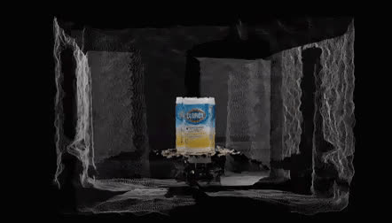
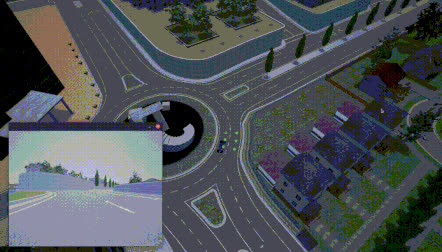
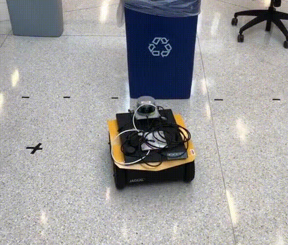
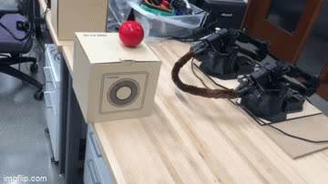

Fun Robotics Projects
A broader portfolio of hands-on robotics work beyond my papers: manipulators, mobile robots and driving simulators, from perception and learning down to the ROS plumbing that makes hardware move.
-

Automated 3D Modeling Sawyer arm, TurtleBot3, Intel RealSense, ROS, MoveIt!, PCL project page codeA Sawyer arm with a RealSense camera and a TurtleBot3 turntable cooperate to scan arbitrary objects and reconstruct 3D models, no CAD experience needed.
-

Autonomous Driving with Deep Q-Learning in CARLA Urban Simulator CARLA 0.9.6, TensorFlow, Keras project page codeA deep Q-learning agent learns to drive collision-free in the CARLA urban simulator, guided by generated waypoints rather than traffic or lane-following rules.
-

Object Avoidance and Line Following with Jackal Robot using CNN and Neural Circuit Policy Clearpath Jackal, RealSense D435i, Velodyne lidar, TensorFlow, ROS project page codeCNN + Neural Circuit Policy navigation on a real Jackal robot, showing that fewer control neurons and less data still give satisfactory performance.
-

Use Robot to Bend Flexible Wire to Specific Shape as Tools with Optimal Control and Active Learning Widow200 robot arms, ROS, PyTorch, RLlib project page codeTwo robot arms bend a soft wire into target shapes via optimal control and learning, then use it as a tool to push and drag objects.